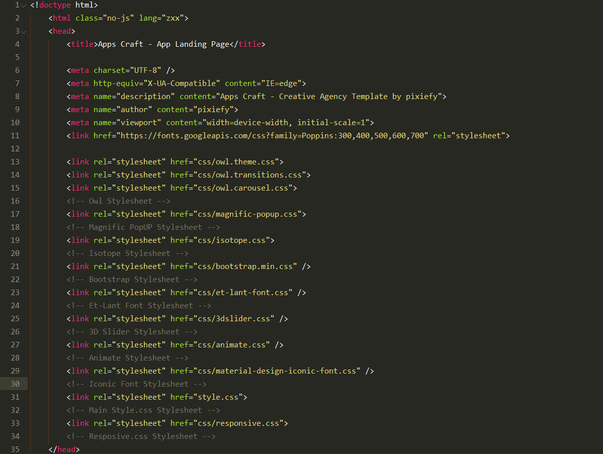
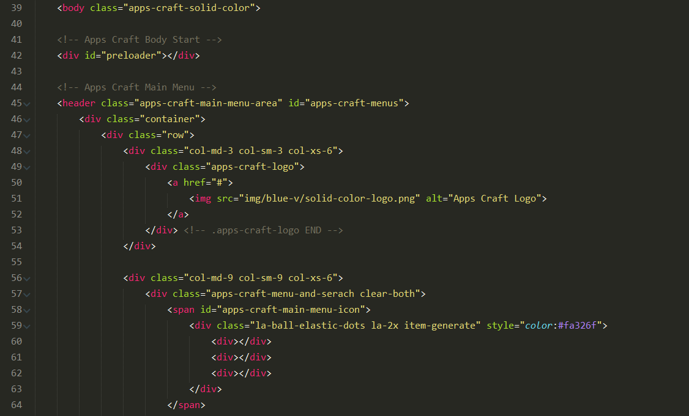
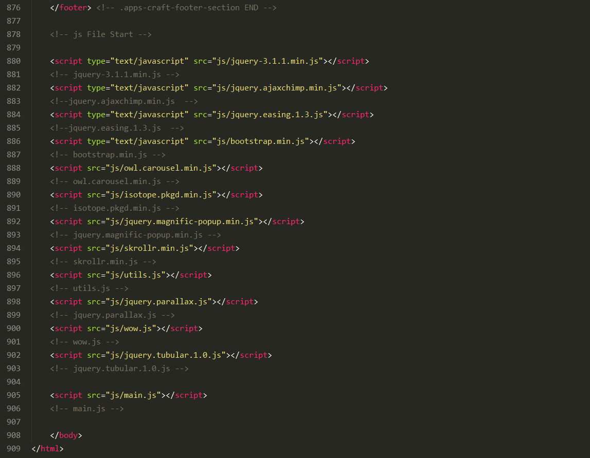
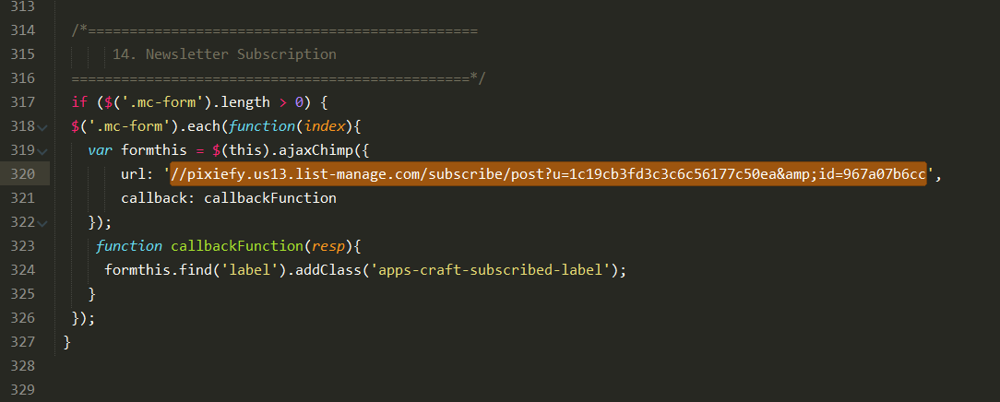
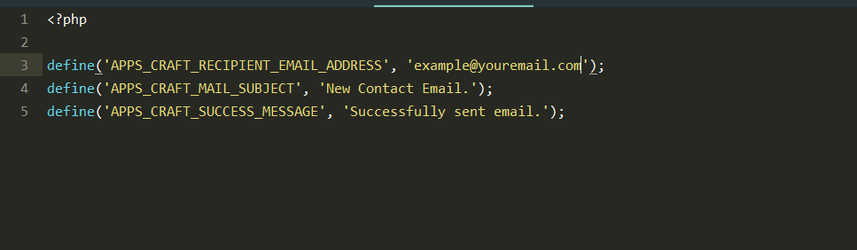

Thank you for purchasing this template. If you have any questions that are beyond the scope of this help file, please feel free to email via my user page contact form here. Thank you so much!
This template is based on a responsive and full screen layout. And it's built using HTML5 standard.
index.html and all other .html variations.
From beginning of the "< body >" tag till the ending "< body />" tag, all the codes and texts are used for the Template structure. You can change any text from the template by navigating through the index.html file and localizing each line of text you want to change.
The < head > contains the template title, favicon, font links and all the stylesheets it needs. We used one google font "Poppins".
We used et-line and iconic-fonts for icons, magnific-popup.css for lightbox and Responsive css styles are in responsive.css inside css folder. There are some other css files also depending on variations, just use the variation folder you like to get preferred style and customize according to your need.
The < body > contains all the contents of the template. From the beginning, Every section has different comment.
If you need to change or customize any section, simply navigate to that section and change whatever you need to change.
NOTE: Every single different variation might got different class on < body > tag depending on style needed. Use the respective class to get any variation style. Specially for Solid Color variation.

At the footer we used jquery-3.1.1 version, my custom scripts and all the necessary plugin JavaScripts depending on the variations.
NOTE: Every single different variation might require some specific script file so please follow as our demo folders and files, Also we comment out all the script files so you can easily modify
style.css - Main stylesheet which includes all the styles of the template. It is located in the root folder of the template. and all other css file contain in the css folder
You can change the colors and the template styles by changing the css styles from css files in template root.
If you would like to edit a specific section of the site, simply find the appropriate label in the CSS file, and then scroll down until you find the appropriate style that needs to be edited.
All our javascript file are contain in js folder
To chage MailChimp Subscription Form setting go to main.js file inside js folder. Go to "14. Newsletter Subscription" comment at line number 319. Now Login to your MailChimp account and copy this your action URL from LISTS>Your Desiered Subscriber List>Signup Forms>Embedded Forms>And copy the action URL. For more info please visit https://github.com/scdoshi/jquery-ajaxchimp
To set up the contact form to send emails with the persons which are contacting you to your desire email addres, open "config.php" file inside php folder and change the email from line number 4 with your own email.
define('CONTACT_FORM_RECIPIENT', 'example@youremail.com');
To receive emails, the entire template needs to be uploaded to a server which supports either PHP4 or PHP5.
I've used all the images, icons and other files from open license source.
Once again, thank you so much for purchasing this template. As I said at the beginning, I'd be glad to help you if you have any questions relating to this template. No guarantees, but I'll do my best to assist. If you have a more general question relating to the themes on ThemeForest, you might consider visiting the forums and asking your question in the "Item Discussion" section.
https://pixiefy.com